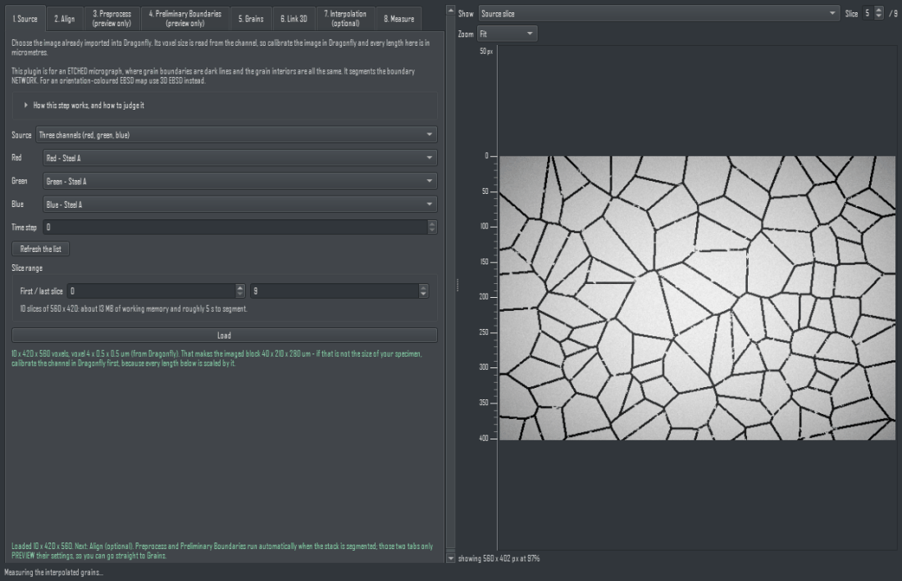
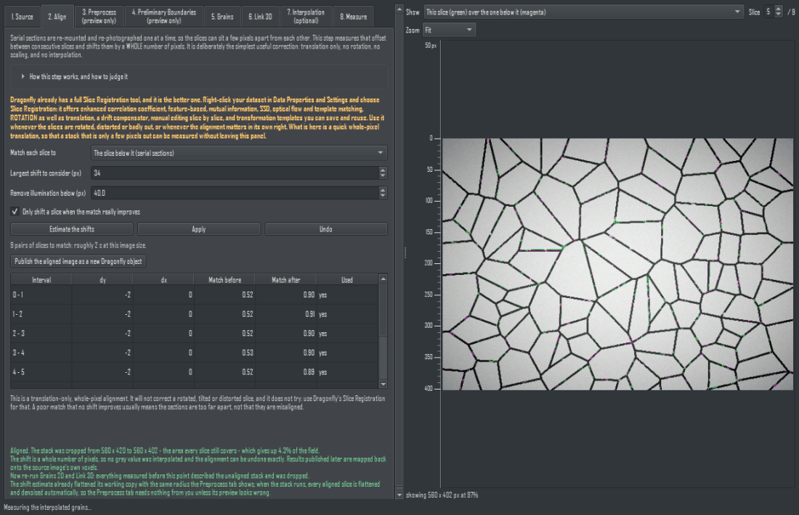
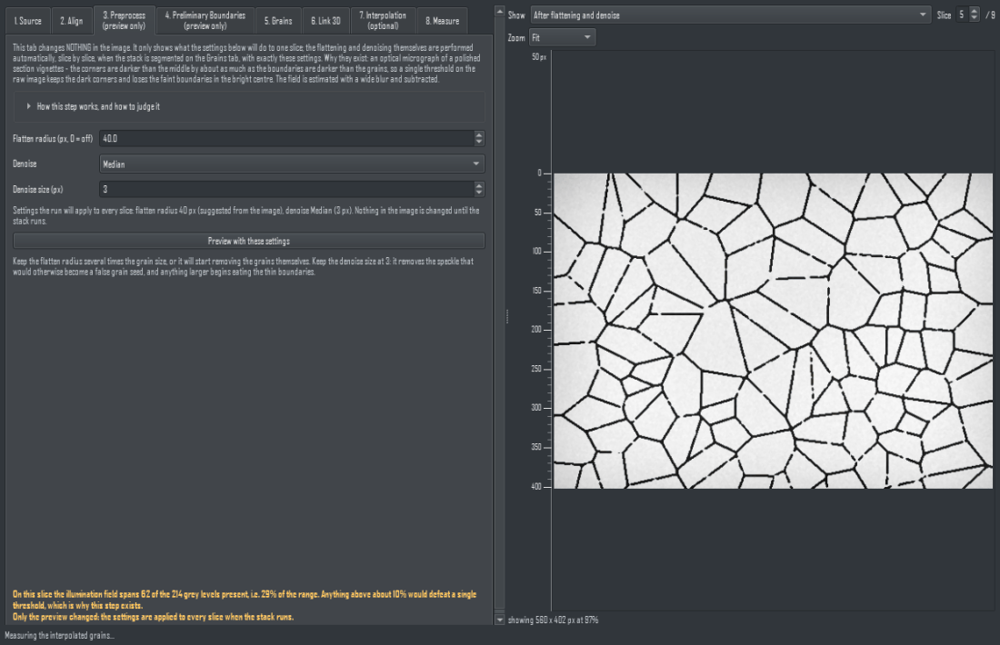
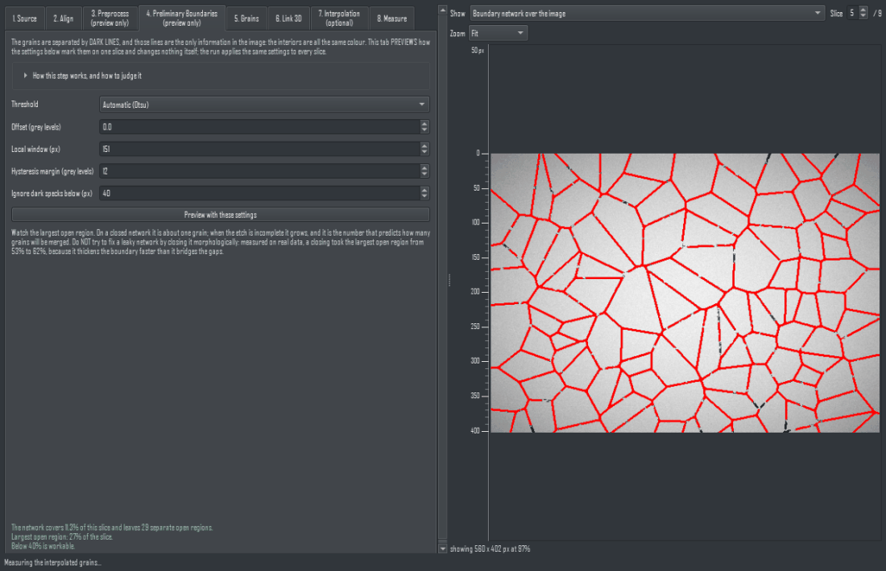
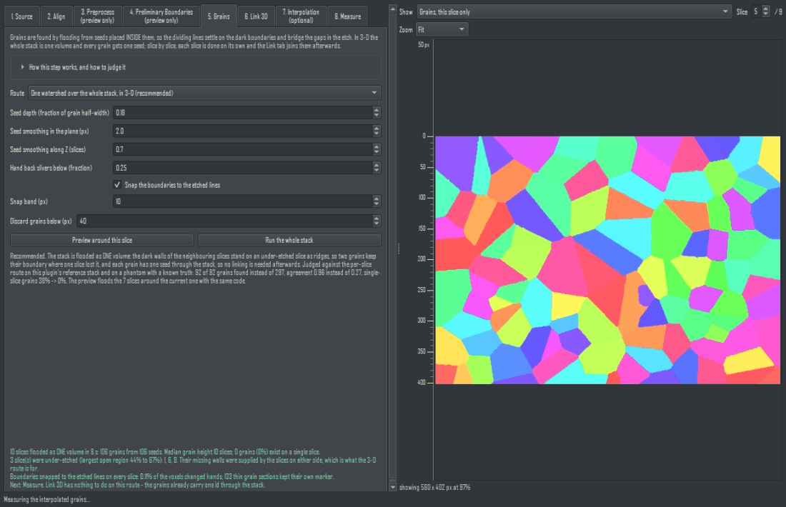
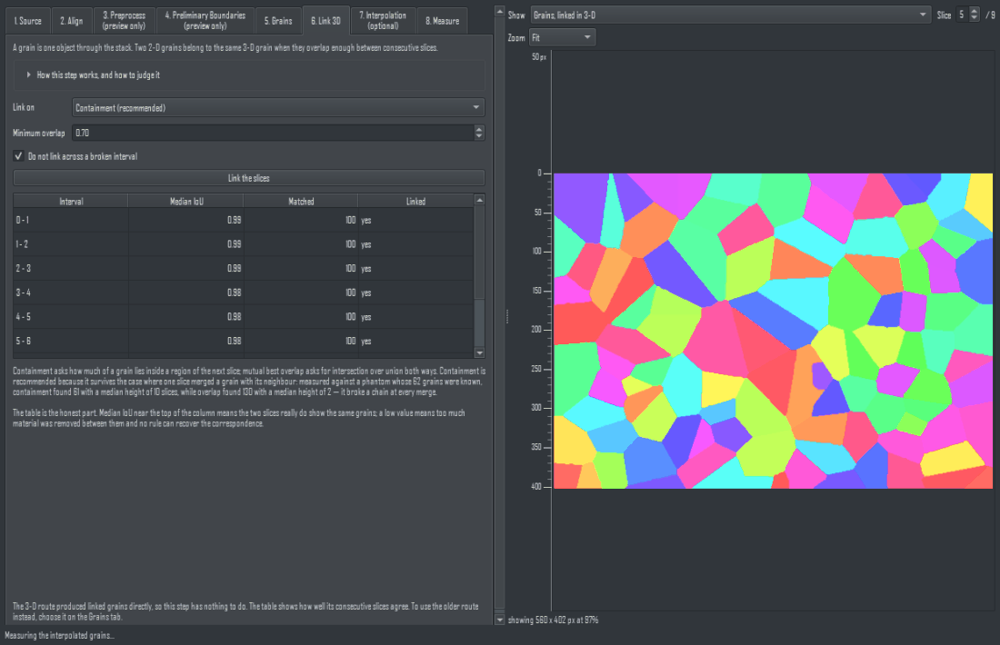
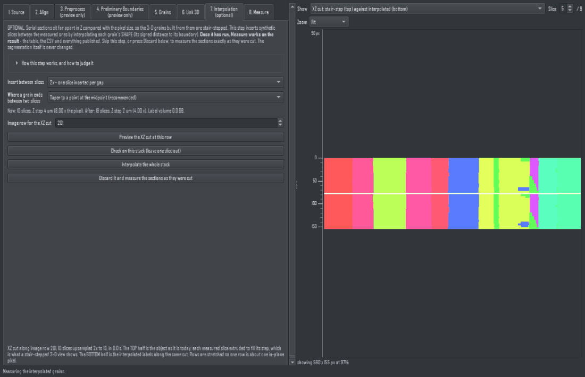
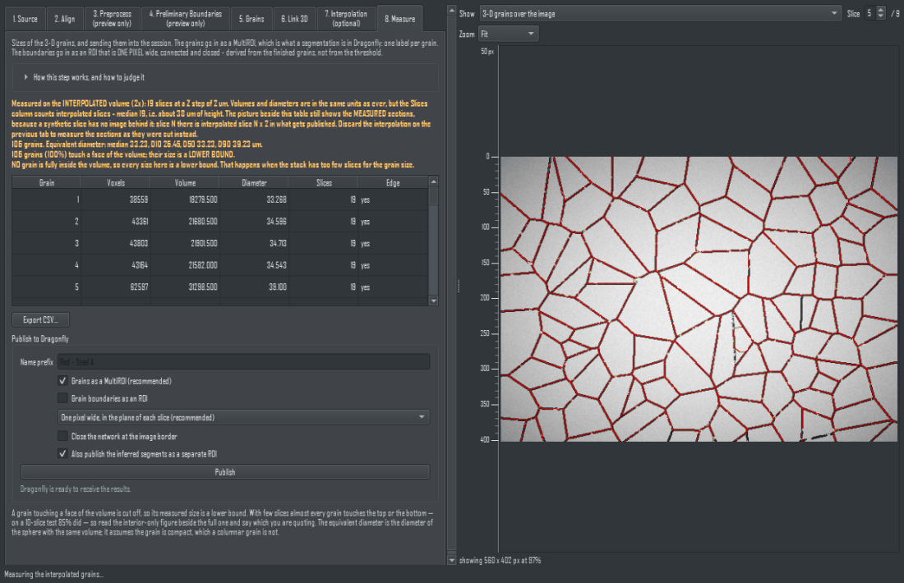
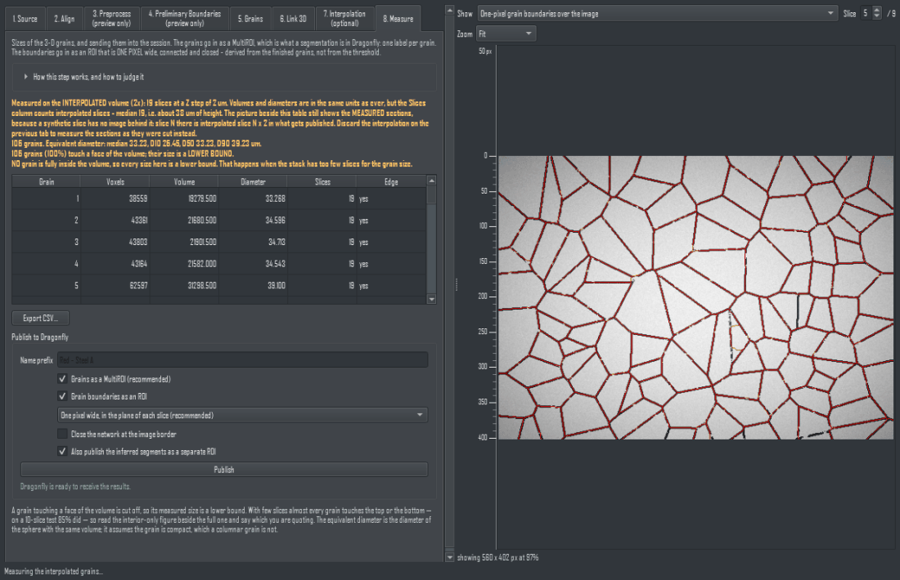

Optical Metallography 3D - User Manual
Dragonfly Prototype Apps · Optical Metallography 3D...
Version 1.9 · 2026-09-07
1. Introduction
An etched metallographic micrograph shows grain boundaries as dark lines on a matrix where every grain interior looks the same. All of the information is in the boundary network, and this plugin segments that network, slice by slice, then links the result into three-dimensional grains.
The eight tabs are the workflow itself. Each opens only once the step before it has produced something, so the panel cannot be used out of order by accident. The seventh, Interpolation, is optional and it sits before the measurement on purpose: if you run it, the eighth tab measures and publishes the interpolated volume; if you skip it, or discard its result, the eighth tab measures the sections exactly as they were cut. Nothing is created in your session until you press a Publish button - Tab 2's optional aligned image, or Tab 8's results. A ninth, Meshing, is optional and comes last: it turns the measured grains into triangle meshes that still touch.
Why this is not the EBSD plugin, and not a colour segmentation. In an EBSD map the grain identity is the orientation measured at each pixel. Here there is no orientation at all, and the interiors carry no distinguishing colour: measured on a reference stack, the CIE76 colour difference between the interiors of different grains is 7.2 - noise - while matrix-versus-boundary is 49.5. A method that clusters or region-grows on interior colour therefore cannot separate these grains at all. If you have orientation data, use 3D EBSD; if you have a colour picture of an IPF map, Color Image Processing says plainly that it decodes no orientation.
In the image area: scroll the WHEEL to step through the slices, drag with the MIDDLE button to zoom (the point under the cursor stays put), and hold the LEFT and RIGHT buttons together and drag to pan. The ruler down the left edge is graduated in image pixels and follows the zoom, and the line under the image says how much of the image is on screen — every parameter in this plugin is expressed in pixels, so that is the number you need when choosing one. Beside the slice number the panel prints the number Dragonfly's own view gives the same slice (Dragonfly may count from the other end), and the preview is mirrored whenever Dragonfly's current 2D view draws the image mirrored, so the two show the same picture the same way up. Show in Dragonfly moves Dragonfly's current 2D view to the slice you are looking at here. Both are read from the live view each time the preview redraws; if that view is not an XY slice view of the image, the panel says so and the button is disabled.
Execute All Steps with Current Settings on the Source tab runs the whole workflow unattended - load, align, commit the preprocessing and boundary settings, segment the grains, link, publish - each step with whatever its own tab shows at the moment you press it, so a run that takes the best part of an hour can be started and left. Interpolation and meshing are OFF by default because they are the expensive ones, and alignment is ON because the Align tab's own auto-apply is; each is a tick box beside the button and a skipped step is written into the log. Every tab stays open at all times so that all of those parameters can be read and changed BEFORE the run: a step whose input does not exist yet refuses when you press ITS button and says which step is missing.
2. Tab 1 - Source
Pick the image already imported into Dragonfly. The voxel size comes from the channel, so calibrate the image in Dragonfly once and every length in this plugin is in micrometres. If Dragonfly reports no voxel size, the panel says so and every length is labelled in voxels instead of quietly pretending.

The Source tab. The channels, the slice range, and the memory and time the run will cost — printed before you commit to it.
- One channel for a grey image, or for one band of a colour image.
- Three channels for a colour image Dragonfly split into Red / Green / Blue. They are paired by name: the first title whose leading word is 'Red', then the Green and Blue whose names match that same image. Pairing by position would join 'Green - Sample 2' to 'Red - Sample 1' whenever two colour images are open.
The three bands are combined with the standard luma weights. The slice range lets you work on part of the stack while tuning; the memory and the time it will cost are printed before you commit, because the reference stack is 207 million voxels.
3. Tab 2 - Align (optional)
⚠ Dragonfly already has a full Slice Registration tool, and it is the better one. Right-click your dataset in the Data Properties and Settings panel and choose Slice Registration: it offers enhanced correlation coefficient, feature-based, mutual information, SSD, optical flow and template matching, rotation as well as translation, a drift compensator, manual editing slice by slice, and transformation templates you can save and reuse. Use it whenever the slices are rotated, distorted or badly out of register, or whenever the alignment itself is part of your result.

The Align tab. Dragonfly's own Slice Registration is named at the top; below it, the measured shift for every pair of slices with the match before and after it.
This tab is deliberately the smallest useful correction, so that a stack which is only a few pixels out can be measured without leaving the panel: one whole-pixel translation per slice. No rotation, no scaling, no sub-pixel shift, no interpolation. It is optional - skip it when the slices already sit on top of each other.
1. Set the view above the image to This slice (green) over the one below it (magenta) and walk the slider through the stack. Where two slices agree the colours cancel to grey; a misalignment shows as a coloured fringe as wide as the error.
2. Press Estimate the shifts. Each pair of neighbouring slices is matched by cross-correlation and the table fills in: the shift found, and how well the two slices matched before and after it. Nothing has moved yet.
3. Read the table. A shift is only worth taking when match after is clearly above match before; the column marked Used says whether it was.
4. Press Apply. The slices are shifted and the stack is cropped to the rectangle every slice still covers - the panel reports how much of the field that costs.
5. Undo puts the whole field back exactly, at any time.
6. Optional: Publish the aligned image as a new Dragonfly object sends the aligned slices into your session as a new image channel. The rest of this plugin does not need it — it is for using the aligned stack with Dragonfly's own tools, or for saving it. It is published at the SOURCE image's own size and position so it lines up with the original; the strip each slice was shifted in from outside the frame is left at zero, and the panel tells you the rectangle that holds real data on every slice. Crop it in Dragonfly if you want only that rectangle — Dragonfly's crop moves the origin with it, which is why this plugin does not hand you a pre-cropped object.
7. Apply the shift as soon as it is estimated is ticked by default, so Estimate also applies the shift in the same step and Undo still takes it back exactly; untick it to read the table first and press Apply yourself. The tick is remembered between sessions.
Why whole pixels. Every later step thresholds the thin dark boundary lines, which are the only information in an etched micrograph. A sub-pixel shift or a rotation has to resample the image, and resampling blurs exactly those lines. A whole-pixel shift moves the data and changes no value; it is also exactly invertible, which is what lets grains measured on the aligned stack still be published onto the original image's own voxels.
Align before you judge the specimen. An interval that still matches poorly after shifting is genuinely a break: too much material was polished away between those two slices, and no registration recovers it. But an interval that is merely TRANSLATED looks identical to a break, because its grains do not overlap - measured on the reference stack, six intervals that Tab 6 reported as breaks all tracked normally once the slices were aligned, one of them going from 0.00 to 0.56 after a 61 px shift. Run this tab first, then read Tab 6's table.
4. Tab 3 - Preprocess
This tab changes nothing in the image [2026-09-06b]. It previews, on one slice, what the flatten radius and the denoise setting will do; the flattening and denoising themselves are performed automatically, slice by slice, when the stack is segmented on the Grains tab, with exactly the settings shown here (the radius is suggested from the image size when the stack loads). You can go straight from Source, or from Align, to Grains; come back here only when the preview or the boundary network looks wrong. The alignment already flattens its own working copy with the same radius before it estimates the shifts, so aligning first does not require anything on this tab either. The tab title says preview only for this reason.
An optical micrograph of a polished section vignettes. Measured on the reference data, the illumination field spans 35% of the grey range - about as much as the boundaries are darker than the grains - so a single threshold on the raw image keeps the dark corners as boundary and loses the faint boundaries in the bright middle.

The Preprocess tab, with the image shown after flattening. The report states how much of the grey range was illumination.
The field is estimated with a wide blur and subtracted, and the panel reports what fraction of the slice's range was illumination so you can see whether it worked.
The radius matters in one direction more than the other. Too large removes less of the vignette, which the report makes visible. Too small is below the grain scale and destabilises every slice: on a phantom whose 36 columnar grains were known, a radius of 12 px still gave the right per-slice count but the slice-to-slice agreement fell to 0.47 and the 3-D link fragmented into 107 grains of median height 3 instead of 41 of height 8. The suggested value scales with the image and is floored to protect that direction.
5. Tab 4 - Preliminary Boundaries
This tab, too, changes nothing [2026-09-06b]: it previews the network that the threshold settings below produce on one slice, so you can judge the leak before paying for the whole stack. The run computes the same network for every slice automatically with these settings.
Mark the dark network. Otsu is usually enough after flattening; a manual level and an adaptive local mean are there for a slice whose etch depth varies faster than the flattening removes. Dark specks below a size are ignored, because a four-pixel blob is dirt and would otherwise cut a grain in two.

The Preliminary Boundaries tab. The dark network is drawn over the image in red, and the report gives the leak — the largest open region, which predicts how many grains will merge.
Watch the largest open region. That is the fraction of the slice taken by the biggest connected region of the complement, and it is the number that predicts how many grains will be merged. On a closed network it is about one grain. On the reference data it was 38% after flattening, and 53% without.
Do not try to fix a leaky network with a morphological closing. Measured on the real data, a closing took the largest open region from 53% to 62% - it thickens the boundary faster than it bridges the gaps. Closing the gaps is the watershed's job, in the next step.
What this tab produces is NOT the boundary the plugin publishes. It is several pixels wide and it is broken wherever the etch was weak; its one job is to be the landscape the watershed floods in the next step. The boundary you get at the end is derived from the finished grains on Tab 8, and it is one pixel wide, connected and complete.
Hysteresis [2026-09-06] is a fourth threshold for a specimen whose etch is faint in places. Otsu (plus the offset) decides where a groove certainly is; a pixel up to the hysteresis margin brighter than that still counts as groove, but only where it is connected to a certain groove pixel. Interior noise is not connected to anything, so it is not marked. Measured on the reference stack, a margin of 12 halves the largest open region on good slices and takes it from three quarters to under half on under-etched ones, while only one marked pixel in twenty lies away from the Otsu network; above 18 it starts marking interior noise. Otsu remains the default: on the full reference stack the hysteresis network gave 1,633 grains against 1,439, and there is no ground truth to say which is right.
6. Tab 5 - Grains
Two routes. One watershed over the whole stack, in 3-D (recommended, the default): the aligned stack is treated as one volume, the dark walls of the slices above and below stand on an under-etched slice as ridges in the distance map, so two grains keep their boundary where one slice lost it, and every grain gets ONE seed through the stack, so nothing has to be linked afterwards. Each slice on its own, then link is the older route, kept so the two can be compared on a new specimen.

The Grains tab on the 3-D route. The seed depth is a fraction of the measured grain half-width, so one setting fits coarse and fine grains; the preview floods the seven slices around the current one with the same code as the full run.
Why 3-D, measured. On the reference stack the per-slice route turned 20,439 2-D grains into 1,905 3-D grains of which 435 existed on a single slice, while four under-etched slices glued neighbouring grains together. Four redesigns were scored on one harness (a phantom with a known truth and two deliberately under-etched slices, plus a crop of the real stack): the 3-D watershed found 92 of 92 phantom grains where the per-slice route found 297, and left no interior grain of the real crop on a single slice where the per-slice route left 38%. On the full stack it took 7 minutes, found 1,439 grains, none on a single slice, and the under-etched slices carry 527 regions against 551 on good slices - the grains those slices had lost are back.
The knobs. Seed depth (a fraction of the grain half-width): raise to merge, lower to split. Seed smoothing in the plane and along Z (in slices; a grain's profile along Z is noisier because the wall moves between sections). Hand back slivers: where a wall moved between sections a grain can claim a thin strip of its neighbour's cross-section on the next slice; pieces below this fraction of the grain's main piece on that slice are returned. Discard grains below removes specks.
Preview first. The 3-D preview needs the loaded stack (its seeds come from the neighbouring slices) and floods a 7-slice window around the current slice. On the per-slice route the preview works on one slice without loading.
Snap the boundaries to the etched lines [2026-09-06] is on by default for the 3-D route. The 3-D flood decides WHICH grain each voxel belongs to from the distance map alone, so its dividing lines can sit beside the etched groove instead of on it: measured on the reference stack, 31% of the published line pixels lay on grey brighter than the Otsu level and 21% were more than 4 px from any groove pixel. After the flood, every slice's lines are therefore moved onto the groove, grain by grain and only within the snap band: every grain keeps its identity (a grain thinner than the band keeps one marker of its own), and where the etch left no groove the line stays where the flood put it. The groove itself is still split down its middle between the two grains, as a metallographer draws the boundary. Measured on the whole reference stack the share of the line lying on the groove rose from 69% to 78% with the same 1,439 grains, at a cost of about 4 minutes on a 40-slice run. The preview snaps only the slice it shows.
7. Tab 6 - Link 3D
A grain is one object through the stack. Two 2-D grains belong to the same 3-D grain when they overlap enough between consecutive slices.

The Link 3D tab. One row per pair of neighbouring slices, so an interval that cannot be tracked is reported rather than linked on a guess.
On the 3-D route this tab has nothing to do: the grains already carry one id through the stack. Its table is still filled - with the slice-to-slice agreement of the 3-D result - and its button stands down. It is the second half of the per-slice route only.
Containment is the default, and the reason is measured. Containment asks how much of a grain lies inside a region of the next slice; intersection-over-union asks for the symmetric overlap. When the next slice's segmentation merges a grain with its neighbour, the IoU collapses even though the grain plainly continues - and against a phantom whose 62 grains were known, linking on IoU produced 130 grains with a median height of 2 slices while containment produced 61 with a median height of 10.
The interval table is the honest part of this plugin. For each pair of consecutive slices it reports the median best IoU: high means the two slices really do show the same grains, low means too much material was removed between them and no rule can recover the correspondence. Such an interval is reported as a break and, by default, not linked across - the grains are cut there instead of being joined on a guess.
On the reference stack, 33 of 39 intervals tracked well (median IoU 0.68) and 6 broke (0.27 to 0.49). The ceiling for this pipeline is 0.98, measured by re-segmenting one slice under noise. So a value near 0.7 is good, not mediocre.
8. Tab 7 - Interpolation (optional)
The stair-step problem. Serial sections are far apart in Z compared with the pixel: on the reference stack the step is 0.5 um against a 0.0586 um pixel, a factor of 8.5. Between one slice and the next a grain boundary moves by a median of 3.2 px, and one boundary in ten moves 11 px or more. A 3-D ROI or a mesh built from the measured slices therefore shows every grain as a stack of flat plates with vertical sides. That is what the data actually says, and Tab 8 measures it as it is unless you run this step - but it is hard to look at, and it is not what the grain looks like.
This step comes before the measurement on purpose. Once you press Interpolate the whole stack, the Measure tab works on THIS volume: the table, the CSV and every object it publishes describe the interpolated grains, and their titles say so. Skip this tab, or press Discard it and measure the sections as they were cut, and the Measure tab goes back to the sections exactly as they were cut. Either way the segmentation itself never changes: interpolation adds slices between grains that were already found, it never re-decides which voxel belongs to which grain. There is no Publish button here - publishing is the Measure tab's job, so that what is published is always what was measured.

The Interpolation tab. The Z spacing before and after is printed below the factor; the XZ preview shows the object as it is today in the top half and the interpolated object in the bottom half; the check below reports the built-in leave-one-slice-out test on your own stack. Interpolate the whole stack hands the volume to the Measure tab; Discard it and measure the sections as they were cut hands the measured sections back.
What the tab does. It inserts synthetic slices into every gap: 1 at factor 2, 3 at factor 4, 7 at factor 8, so 40 measured slices become 313 at 8x. For each grain it takes the signed distance to that grain's boundary on the slice below and on the slice above, blends the two linearly by position in the gap, and gives every synthetic voxel the label whose blended distance is largest. Because of that last step the result is a partition - every voxel belongs to exactly one grain, nothing overlaps and nothing is left empty - which is what separates it from interpolating each grain on its own. The measured slices are kept bit-exactly where they were; nothing is invented beyond the last one. A grain that is present on one slice and absent on the next ends in a cone whose apex is at the midpoint of the gap: the section does not say where the grain really ended, so the tab puts the end half-way and says so, rather than pretending to know.
The Z spacing, before and after. The tab prints the slice spacing of your stack next to the in-plane pixel, and the spacing the interpolated object will carry: at factor 8 the reference stack goes from 0.5 um to 0.0625 um in Z, i.e. from 8.5 : 1 voxels to 1.07 : 1, nearly cubic. Pick the factor from these two numbers - the aim is voxels that are roughly as tall as they are wide, not the largest factor offered.
1. Choose the factor (2, 4 or 8) and read the memory and time estimate under it before anything runs.
2. Move the row slider to a row across the field and read the XZ preview: the top half is the object exactly as it is today - flat plates, one per measured slice - and the bottom half is the same row after interpolation. Both halves are computed exactly, not sketched.
3. Press Check on this stack (leave one slice out) to run that test on your own stack; read the two numbers it returns (below).
4. Press Interpolate the whole stack. The full interpolated volume is built on a worker thread; the panel stays usable.
5. Go to the Measure tab. Its summary now begins by naming the interpolated volume, its factor and its Z step, and everything it publishes carries that factor in its title.
6. Changed your mind? Press Discard it and measure the sections as they were cut. The Measure tab returns to the measured sections and says so; nothing else is lost.
The built-in check, and how to read it
Nothing here can be verified against a slice that was never cut, so the tab verifies against slices that were: it removes one measured slice, rebuilds it from its two neighbours, and compares. The rebuilt slice is scored two ways - the fraction of pixels carrying the right grain, and the median distance in pixels between the rebuilt boundary and the real one. Both are reported for the plain stair-step copy and for the interpolation, side by side, so you see the improvement on your data rather than on ours. The gap in this test is two steps, twice what the tab actually fills, so the numbers are pessimistic. On the reference stack the check reports 3.2 px for the stair step and 1.2 px for the interpolation (pixel accuracy 0.884 against 0.949).
Why nothing fancier was chosen. The same test was run over the whole reference stack against every stronger method that was suggested, and the median boundary error was:
- nearest-neighbour copy (the stair step as it stands): 3.1 px
- per-grain signed-distance blend - what this tab does: 1.1 px
- the same blend after a Demons elastic registration had warped the two neighbours half-way towards each other: 1.1 px, identical - even though the registration did move the boundaries by the measured per-step shift
- the same blend after aligning each grain on its own centroid: 1.5 px, worse
- a cubic path through four slices instead of a line through two: 1.4 px, worse
94% of what the blend still gets wrong lies inside grains that are present on both neighbouring slices - it is the shape of the boundary inside the gap, which the two sections simply do not carry and no method can recover from them. So the linear two-slice blend is the method; anything that claims more has to beat 1.1 px on this test.
Memory and time
At factor 8 the reference stack (40 x 1945 x 2386) becomes 313 slices, a 2.9 GB label volume, built in about two minutes (80-124 s measured, peak working set 3.6 GB). The tab prints the size for your stack and factor before the run. When memory is short choose 4x or 2x: the object is 4 or 8 times smaller and the stair step is already much reduced.
What changes in the numbers when you measure the interpolated volume
- Grain volume barely changes, and is arguably better. The measured table already multiplies every voxel by the FULL slice step - 0.5 um on the reference stack - so it already extrudes each section across the whole gap and puts a vertical wall at the section. Interpolation does not add volume; it replaces that extrusion with a boundary that moves across the gap. The specimen's total volume is preserved to within the half-step the stack gives up at its top and its bottom face, where there was no second section to interpolate against: the interpolated total measures ((Z - 1) + 1/factor) / Z of the measured one - 97.8% on a 40-section stack at 8x, 91.3% on a 10-section one. What shifts between two neighbouring grains is only the part of the gap the two treatments disagree about.
- The Slices column counts interpolated slices. A grain spanning 5 sections reads 39 slices at 8x when both its ends lie inside the stack, 36 when one end is the stack's own top or bottom face, and 33 when both are. Quote the height in micrometres instead - the panel prints it in the first line of the summary: the factor, the number of slices, the Z step, and the median span both as a slice count and as a height. That height is close to the measured one but not identical to it: an interior grain gives up one interpolated slice (step / factor, 0.0625 um at 8x on the reference stack), and a grain that ends at a face of the stack gives up half a section step there, because the measured table extrudes its end section over a full step while the interpolated volume stops at the section itself. Say which object your figure came from.
- The one-pixel boundary ROI is drawn per interpolated slice, so its voxel COUNT grows by roughly the factor while each voxel is a factor thinner. Compare boundary sizes only between objects built the same way, and never a measured network against an interpolated one.
- Nothing in a synthetic slice is new information. It is the smoothest shape consistent with the two sections that bound it, so a boundary that is really faceted inside the gap will be drawn smooth. That is exactly where the residual sits: 94% of what the blend still gets wrong lies inside grains present on both neighbours. Interpolating does not let you quote a feature finer than your section spacing supports.
⚠ Always say which object a number came from. Two results from this plugin are comparable only when they were measured on the same kind of object. That is why the CSV carries a source column (measured_sections or interpolated_x8) and a slice_thickness column, why the published titles carry (interpolated x8), and why the summary's first line names the object. The interpolation is an interpretation of the gaps between your sections - a defensible one, and the table above says how far it can be trusted - but it is not extra data.
To compare with and without: measure and publish twice. Run the interpolation, publish from the Measure tab, then press Discard it and measure the sections as they were cut and publish again - the two objects sit on the same grid and the same origin, with the factor in one of the two names. In Dragonfly, set a 2-D view to XZ or YZ and switch between them, or build a mesh from each: the plates of the measured object against the smooth sides of the interpolated one.
9. Tab 8 - Measure and publish
The first line of the summary says which object these numbers describe. If you ran Tab 7, this tab measures and publishes the interpolated volume and names its factor and its Z step; if you did not, or if you pressed Discard there, it measures the sections exactly as they were cut and says nothing extra. Nothing else about this tab changes with that choice.
Per grain: voxel count, volume, equivalent diameter, and how many slices it spans. That last column is worth reading on its own: a 3-D grain present on one slice was never linked to anything, and a table full of them means the linking failed rather than that the grains are flat. On an interpolated volume the column counts interpolated slices - a grain spanning 5 sections reads about 39 at 8x, fewer if one of its ends is a face of the stack - so quote the height in micrometres, which the summary prints beside it, and say which object it came from (Tab 7 gives the arithmetic).

The Measure tab, shown with an interpolation in force: the first line is the interpolated banner, naming the factor and the Z step, and the Slices column counts interpolated slices. Below it, per-grain volume and equivalent diameter, the D10/D50/D90 spread, and how many grains touch a face of the volume — those are lower bounds.
A grain touching a face of the volume is cut off, so its measured size is a lower bound. With few slices almost every grain touches the top or the bottom - on a 10-slice test 85% did - so the interior-only mean is given beside the full one and you should say which you are quoting.
Publishing sends the grains in as a MultiROI, one label per grain named with its size, and optionally the boundary network as an ROI. Geometry is copied from the source channel, so the result sits exactly on the image it came from. Two more boxes, both on by default: Publish the aligned image as well puts the aligned, cropped grey image in beside the grains and the boundaries (only when the stack was aligned and not interpolated), and Grains that touch no face of the volume as a separate MultiROI adds a second MultiROI holding only the grains whose size is complete, renumbered consecutively, each label named after the grain's number in the table.
When an interpolation is in force, four things about publishing change. Every title gains (interpolated x8). The Z spacing written into the published objects is the section step divided by the factor - 0.0625 um instead of 0.5 um at 8x - so distances measured in Dragonfly are right (this override was verified in a running Dragonfly: a published MultiROI read back Z = 0.125 um against a 0.5 um source at 4x). The aligned grey image is not published alongside, because it has the measured stack's 40 slices against the labels' 313 and the two would not share a grid. And on an aligned stack, if Dragonfly refuses the shifted origin the publish fails with its reason instead of falling back to the source frame: that fallback undoes the per-slice whole-pixel shifts, and a synthetic slice has no shift of its own to undo.
The CSV holds every grain, plus two columns that record what was measured: slice_thickness, the Z step of the object the row came from, and source, which reads measured_sections or interpolated_x8. The suggested filename gains _interpolated_x8 for the same reason. Keep both columns when you paste the numbers into a report.
Publishing a slice sub-range is refused, with the reason: the new object inherits the source channel's origin and would land in the wrong place in Z. Load the full range, or export the CSV.
The boundary ROI: one pixel wide, connected, closed

The boundary that gets published, shown over the image: one pixel wide, following the etched line where there is one and carrying straight on across the gaps where there is not, so no two grains are left touching.
The boundary that gets published is not the preliminary network from Tab 4. It is derived from the finished grains: for every pair of neighbouring grains a line is drawn between them, one pixel wide, whether or not the etch showed a line there. So two grains are always separated, the network never breaks, and you can trace it, measure its length, or use it as a mask.
The line is 8-connected and the grains it encloses are 4-connected - the standard pair, and the reason a diagonal step in the line does not leak. After publishing, the report states the size of the network, how many connected pieces it is in, and how many pixels (if any) could not be thinned to one. That last number should be zero; when it is not, it is a junction where four grains meet in a 2x2, which no one-pixel line can resolve - not a setting to tune.
- One pixel wide, in the plane of each slice is the recommended style and the default. On the reference data it is about 3% of the volume.
- Three-dimensional interface shell is the older reading: every voxel with a differently-labelled face neighbour, two voxels thick, 38% of the reference volume. It answers a different question, and on a stack of few slices it is close to meaningless.
- Close the network at the image border additionally paints the frame, so a grain cut by the edge of the field of view is enclosed too. Those pixels are not grain boundaries - leave the box unticked if you are going to measure boundary length.
A line pixel has to be taken from one of the two grains it separates, because on a pixel grid there is nowhere else to draw it. So the boundary ROI overlaps the grain MultiROI and the grains keep the sizes in the table; subtract the ROI from the MultiROI in Dragonfly if you need the two to be disjoint. To see the network before publishing, set the picture selector to Grain boundaries, one pixel wide - that is the very array Publish will hand over.
Supported and inferred line [2026-09-06] A line pixel is supported when an etched groove pixel of its own slice lies within 2 px of it; the rest of the line is inferred - it records where the 3-D flood decided two grains meet, with nothing in that slice's image to show for it (typically an under-etched slice). The complete one-pixel network is published as before; with Also publish the inferred segments as a separate ROI ticked (the default) the inferred part goes in as a second ROI whose title ends in inferred, the report states the supported share, and the preview Boundaries over the image: etched (green), inferred (magenta) shows the two on the picture. Not offered for an interpolated volume, whose synthetic slices have no image behind them.
10. How to tell whether your stack can be reconstructed at all
This is the question to settle before trusting any 3-D number, and the plugin answers it for you in the Tab 5 table.
- If most intervals show a median IoU around 0.6 or higher, the slices are close enough together and the grains can be tracked.
- If most intervals are low and most grains span one slice, the polishing removed about a grain's worth of material per step. No algorithm can fix that; the specimen has to be re-sectioned with a smaller step. As a rule of thumb, aim for at least five slices through the smallest grain you care about.
- A few isolated breaks in an otherwise good stack simply split it into blocks. Each block between two breaks is a valid 3-D volume; measure the blocks separately rather than reporting one number across a break.
11. What this plugin does not do
- It does not measure orientation, and nothing here can be turned into a misorientation, a twin identification or a pole figure. An etched micrograph carries no orientation.
- It does not do a full registration. Tab 2 corrects a whole-pixel translation per slice and nothing else: no rotation, no scaling, no sub-pixel shift, no elastic warping. For any of those, use Dragonfly's own Slice Registration first and come back afterwards.
- It does not do sub-pixel boundary localisation. A boundary is a voxel face.
- It does not separate phases or identify inclusions; the dark blobs an etch leaves are treated as boundary or as specks by size alone.
- It does not assume grains are compact. It reports the equivalent diameter, which does, so for a columnar structure read the volume and the slice span instead.
9. Meshing (optional). Turns the grains into triangle meshes that still TOUCH. One mesh is built for the whole polycrystal with SHARED vertices, so the face between two grains exists once and belongs to both; smoothing moves that one surface and both grains follow it. Meshing each grain on its own and smoothing it cannot do that - the surfaces drift apart by a fraction of a voxel everywhere - and neither can meshing the boundary ROI, whose one-voxel band comes back from marching cubes as a shell with two faces a voxel apart. Target voxel size defaults to the source image's own Z step, because the shape between two sections is inferred rather than measured: on the reference stack, meshing at the pixel size gave 76 million triangles of which 87% were horizontal walls between slices - the staircase itself - against 1.9 million at the Z step. Smoothing is Taubin by default (it keeps the volume; a plain Laplacian shrank the same grains by 2.5%), every vertex is held inside its own half-voxel cell, and vertices where three or four grains meet are restrained or pinned so triple lines and corners survive. The report states that every grain is closed with outward normals and how its volume compares with the voxel count it came from; the picture beside it draws the mesh where the current slice cuts it, over the image itself. Publish the polycrystal as one Mesh, publish grains one by one up to a limit, or export every grain as a binary STL - which is the way to get thousands of them out.